Teste técnico · TOTVS Protheus
Consulta de Pré-notas Não Classificadas
Visão sintética por filial, com indicadores e gráfico de pizza, e visão analítica de cada filial ou de todas, com exportação para Excel. Feita em PO UI, aberta pelo menu do SIGACOM.
Protheus 12.1.2510 SIGACOM · Compras PO UI · Angular TLPP orientado a classe Sem dicionário a aplicar
Rubens Simi · 31/10/2026
Apresentação
Oito minutos e meio, do menu à planilha exportada.
Ativar som recomeça do início
Em funcionamento
As telas da validação, na ordem de uso. Passe o mouse para pausar ou clique numa etapa.
Protheus · SIGACOM · Pré-notas não classificadas
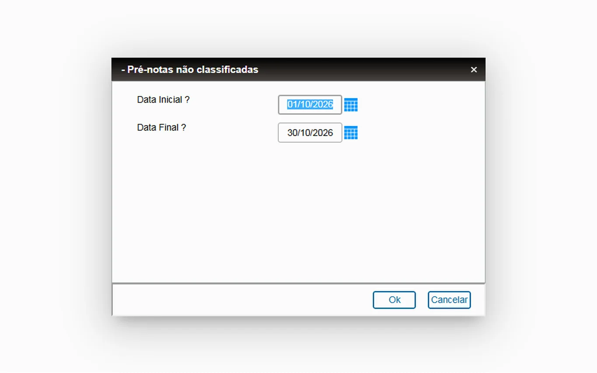
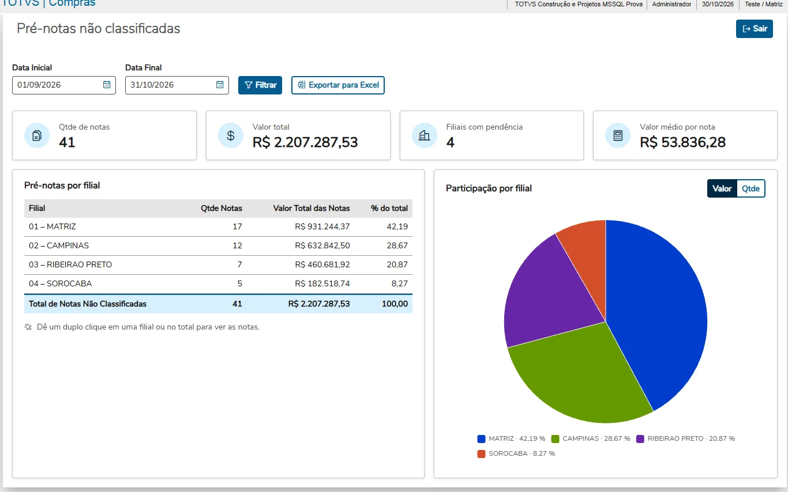
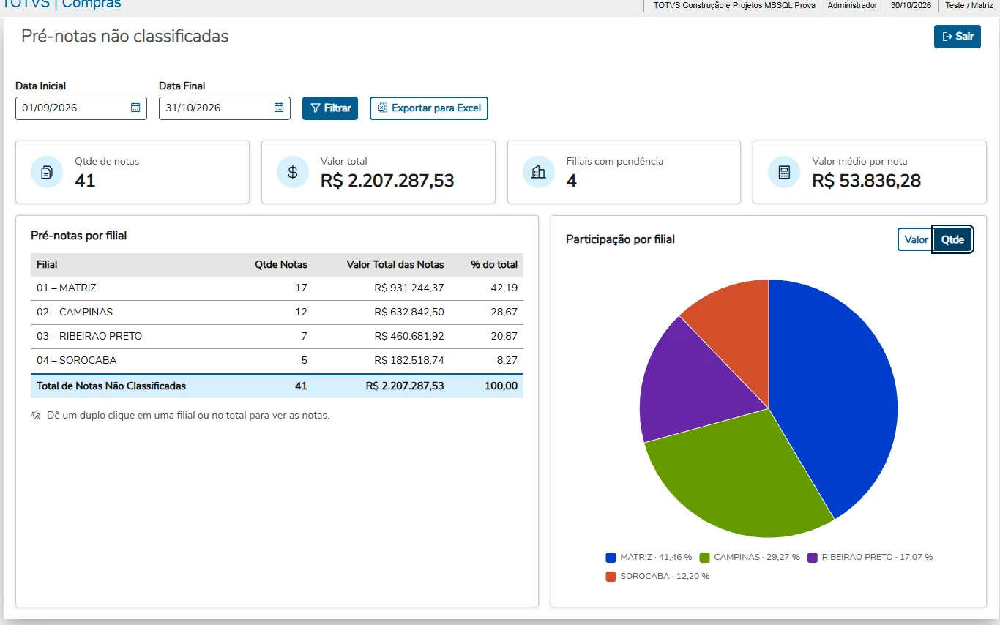
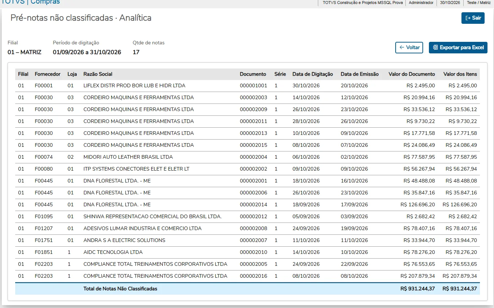
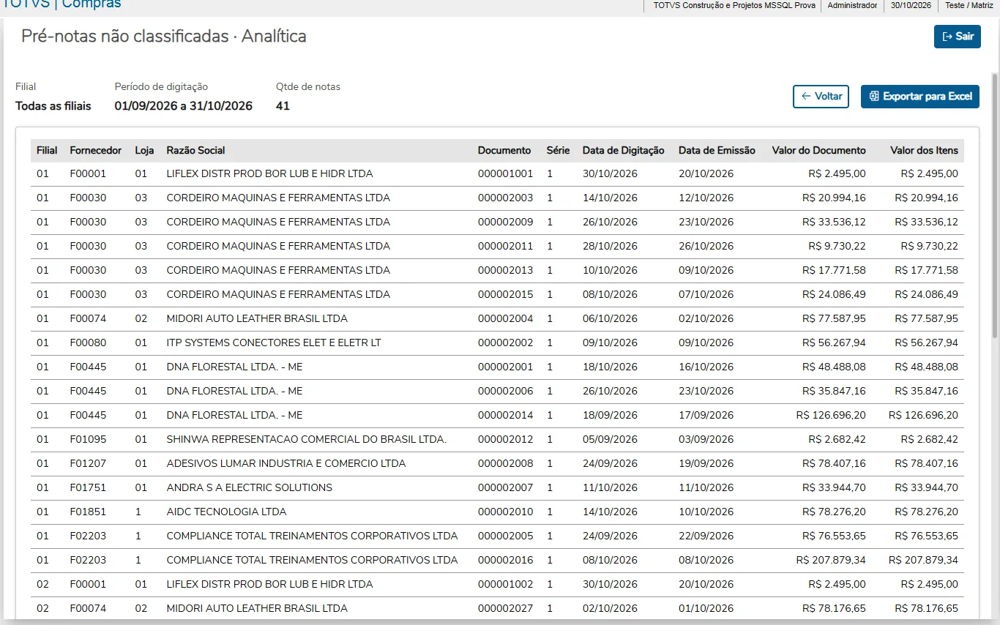
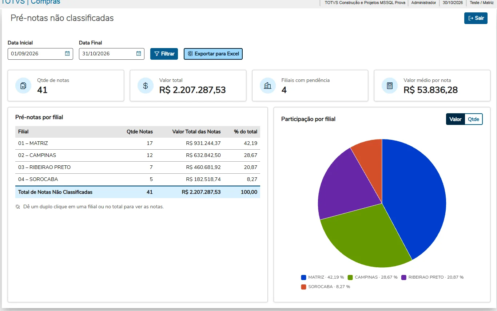
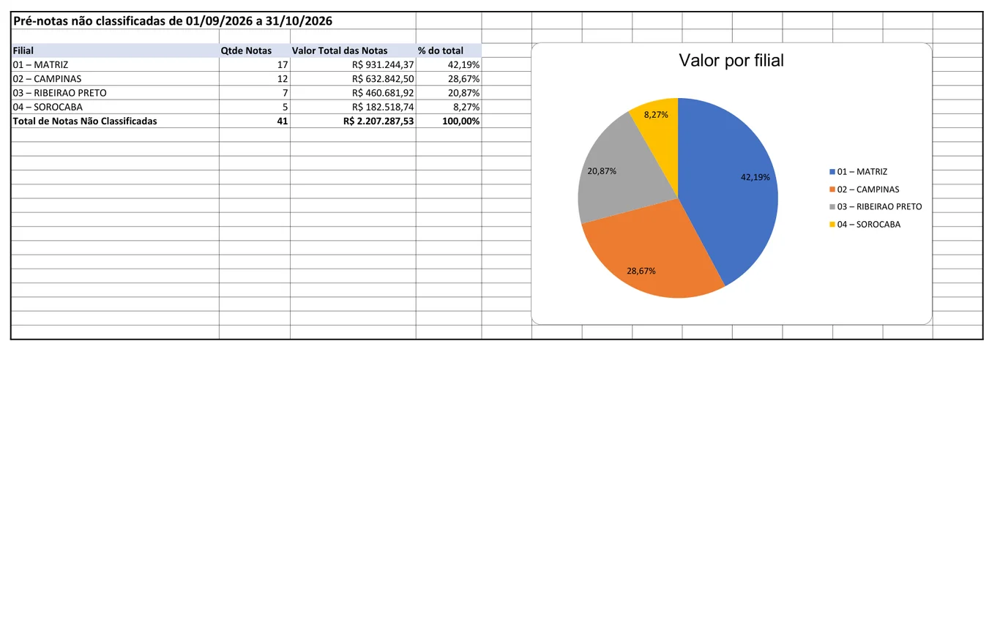
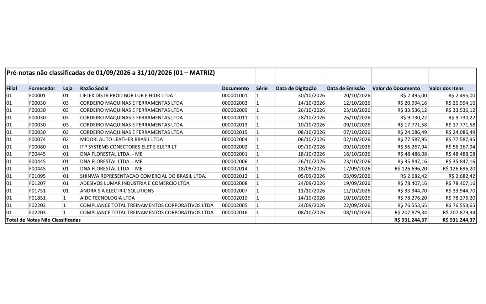
01 Informe o período A rotina abre pelo menu do SIGACOM e pergunta a data inicial e a final. 02 Sintética por filial Indicadores no topo, quantidade, valor e % do total de cada filial. 03 Gráfico em Valor ou Qtde A pizza mostra a participação de cada filial e troca de medida num clique. 04 Analítica da filial O duplo clique na filial abre as notas, uma por linha. 05 Analítica de todas O duplo clique no total traz as notas de todas as filiais. 06 Exportar para Excel As duas telas exportam o que está na tela. 07 Planilha da sintética Com o gráfico de pizza nativo do Excel. 08 Planilha da analítica As colunas da tela, com o total no fim.
Entrega
Cada pasta baixa separada. As pastas com mais de um arquivo descem em ZIP, montado no próprio navegador.
01
Vídeo de apresentação
Apresentação narrada da consulta, do menu à exportação para Excel.
Video de apresentacao - Consulta de Pre-notas Nao Classificadas.mp4 75,3 MB
Baixar vídeo MP4 · 75,3 MB
02
Documentos
Especificação técnica, termo de validação com as telas de cada caso, manual do usuário e GMUD da implantação.
GMUD - Consulta de Pre-notas Nao Classificadas.pdf abrir 152 KB MIT010 - Consulta de Pre-notas Nao Classificadas.pdf abrir 3,5 MB MIT044 - Consulta de Pre-notas Nao Classificadas.pdf abrir 1,4 MB Manual do Usuario - Consulta de Pre-notas Nao Classificadas.pdf abrir 1,8 MB
Baixar pasta ZIP · 6,9 MB
03
Patch
Os 7 objetos prontos para aplicar no RPO, com a lista do conteúdo.
CAPITANI-PRENOTAS-2026-10-30-conteudo.txt 1 KB CAPITANI-PRENOTAS-2026-10-30.ptm 1,9 MB
Baixar pasta ZIP · 1,9 MB
04
Fontes
Seis fontes TLPP orientados a classe, o app PO UI compilado e o fonte Angular do app.
COMPACTADORZIP.tlpp 7 KB CONSULTAPRENOTA.tlpp 13 KB PLANILHAANALITICA.tlpp 6 KB PLANILHAPRENOTA.tlpp 24 KB PLANILHASINTETICA.tlpp 9 KB PRENOTAS.tlpp 8 KB prenotas.app 1,9 MB prenotas-app/ (37 arquivos do Angular) 314 KB
Baixar pasta ZIP · 2,3 MB
Telas
Capturadas na validação, com 41 pré-notas em 4 filiais.
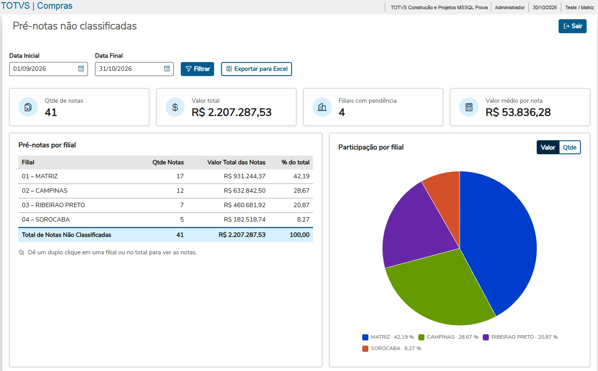
Tela sintética: indicadores, tabela por filial e gráfico em Valor 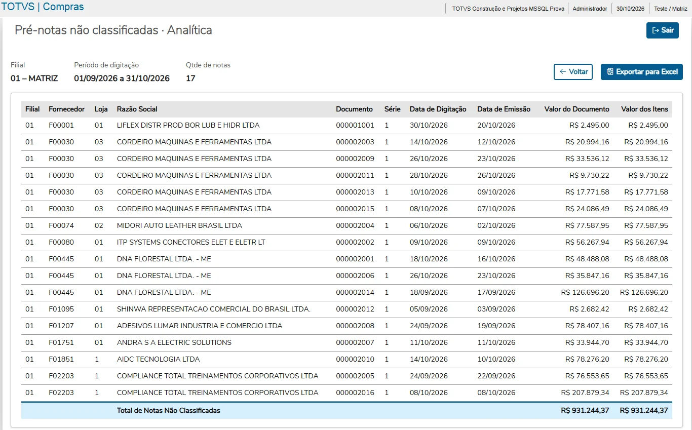
Tela analítica da filial, aberta no duplo clique 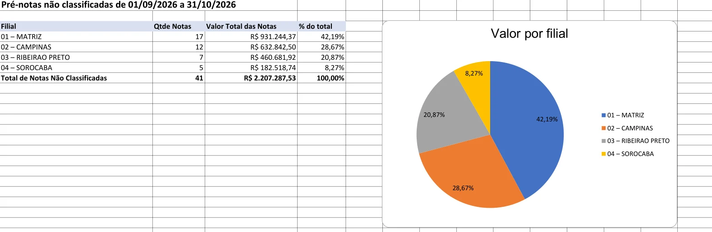
Planilha exportada, com o gráfico de pizza nativo do Excel
Implantação
Nenhum SX1, SX3, SIX ou parâmetro: só o RPO e o menu.
Aplicar o patch CAPITANI-PRENOTAS-2026-10-30.ptm no RPO, ou compilar os 6 fontes TLPP e o recurso prenotas.app.
Incluir no menu do SIGACOM, em Consultas, a função capitani.compras.prenota.u_prenotas.
Abrir a rotina, informar o período e conferir as duas telas e as exportações. Detalhes na seção 10 do MIT044.